Blueprint
An engineering drawing — cyan linework on blueprint blue, a drafting grid and orange redlines.
- Best for
- engineering and architecture talks, system design reviews, hardware and robotics, technical proposals, STEM lessons
- Avoid for
- emotional storytelling, fashion and lifestyle, printed handouts
- Typefaces
- IBM Plex Sans Condensed · IBM Plex Sans · IBM Plex Mono
- Feel
- technical, precise, constructive, focused · dark · crisp motion
- bg
#0F2D52 - ink
#EAF3FC - accent
#FF8A5B
Ask Claude for it by name:
Make a presentation about … in the Blueprint themeAll 32 slides in Blueprint
Every layout from the showcase lecture. Click a frame to open it in the live deck.
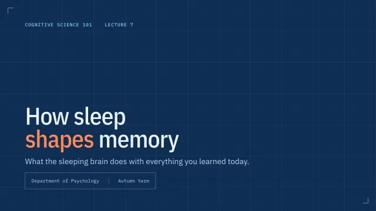
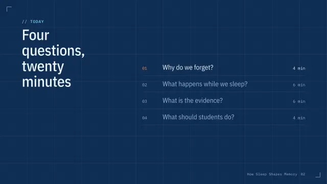
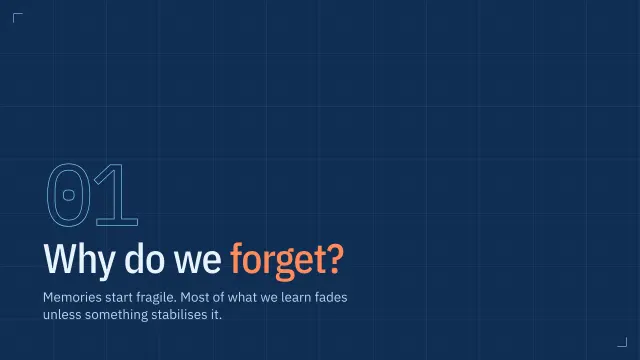
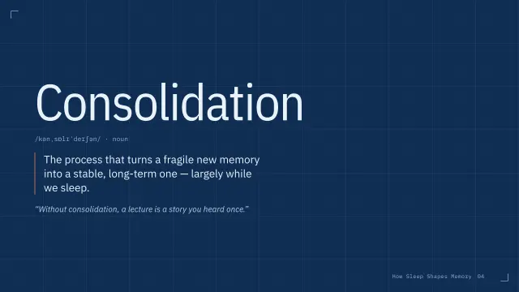
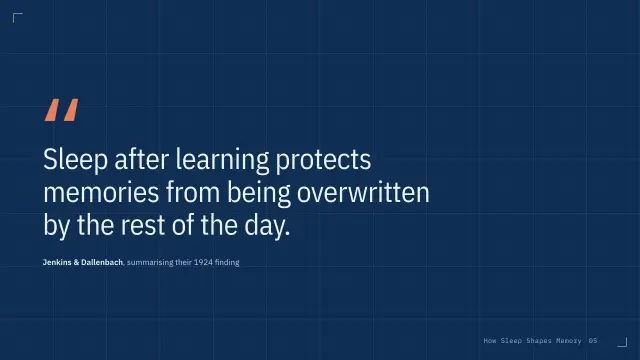
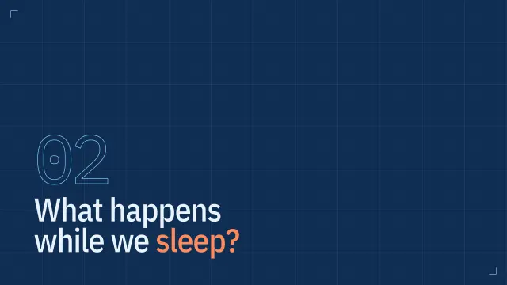
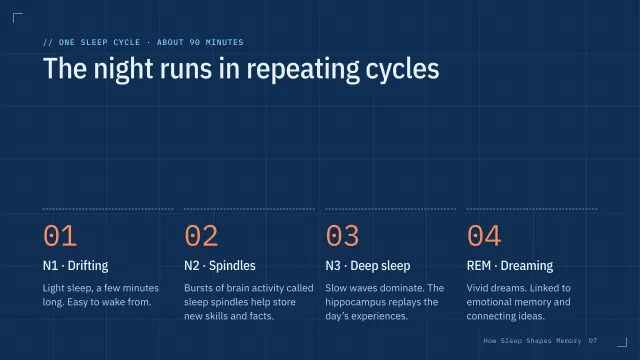
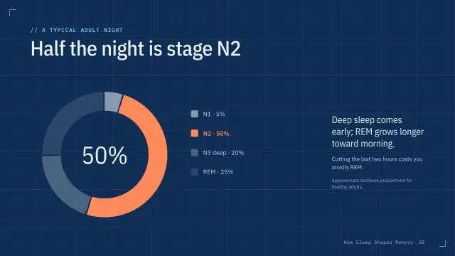
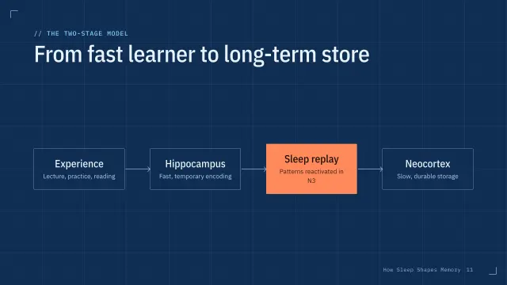

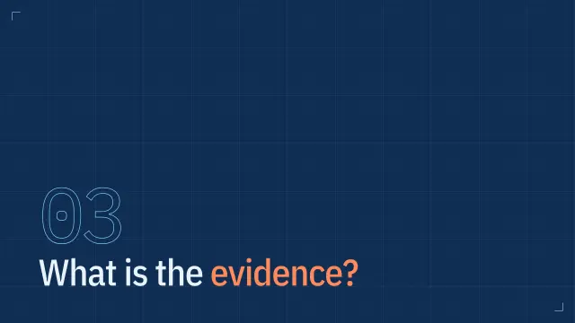
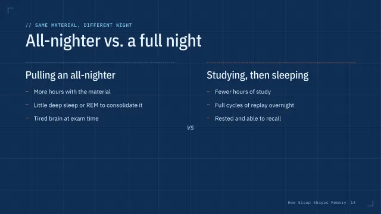
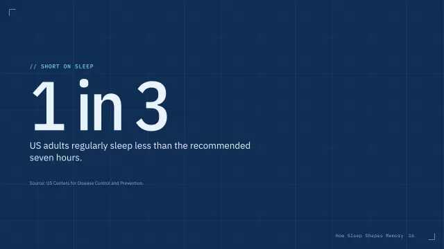
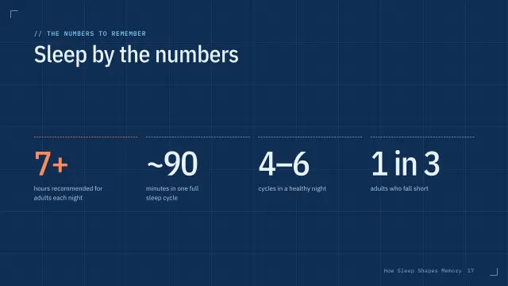
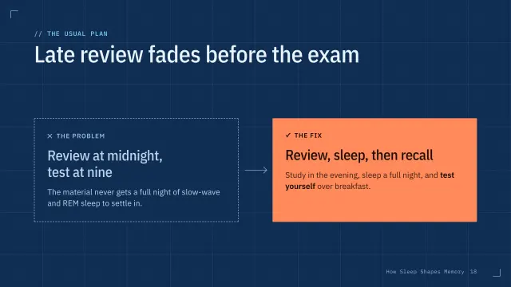
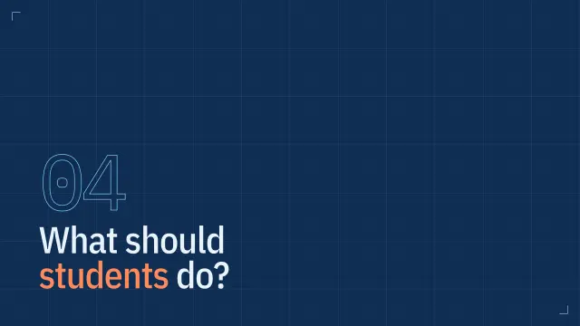
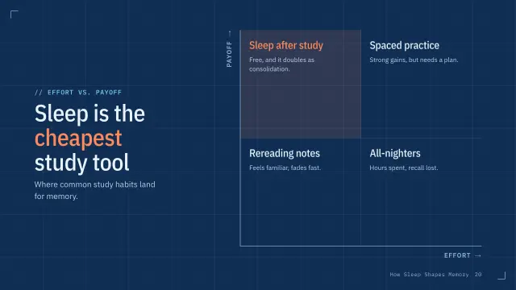
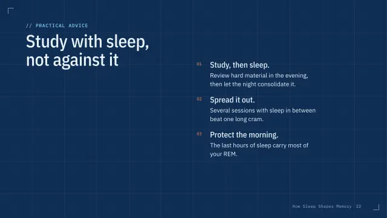
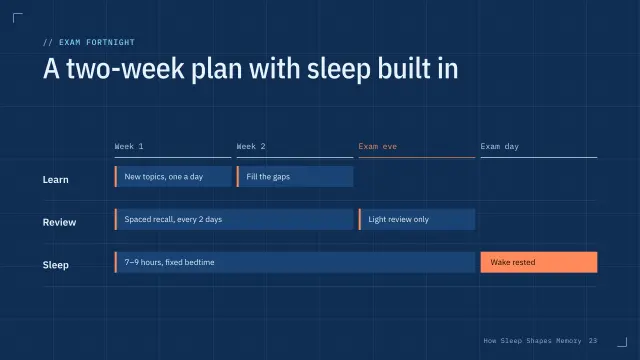
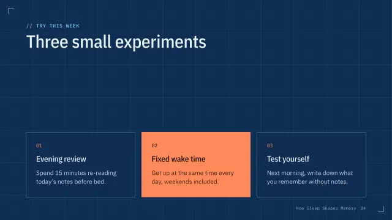
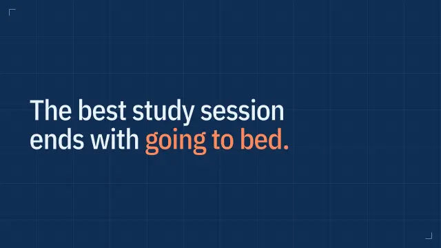

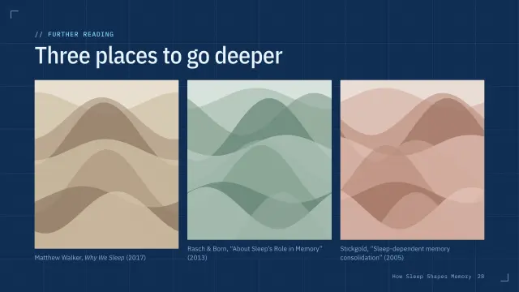
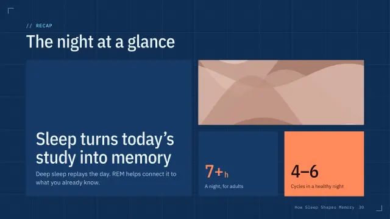
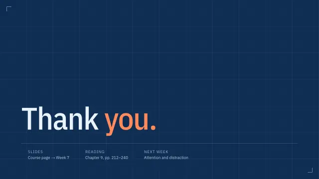